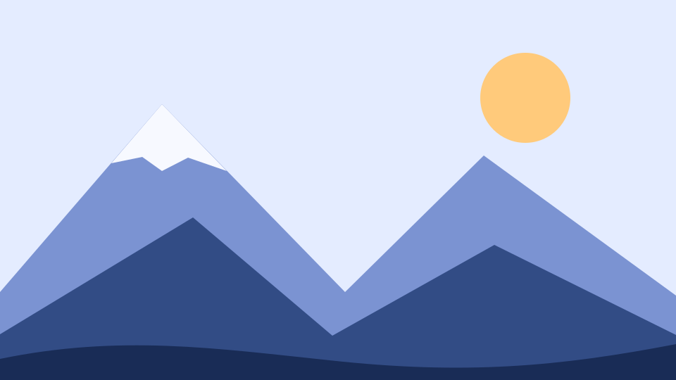

Лепка руками
Пиала или тарелка за два часа.
01 · Проценты
Сделайте синюю полоску .meter шириной 50% от её родителя .track. Попробуйте менять ширину окна.
Проверка. На 360 и 800 px синяя полоска занимает ровно половину серой дорожки.
02 · Ограничение ширины
Задайте .note ширину 90% от площадки, ограничьте её до 420 px с помощью max-width и расположите по центру. Внутренние отступы должны входить в заданную ширину.
Проверка. На 360 px карточка занимает 90% доступной ширины внутри рамки. На 900 px её ширина равна 420 px. Поля слева и справа одинаковые.
03 · Высота окна
Задайте баннеру .banner минимальную высоту 25% от высоты окна. Используйте vh. Содержимое должно помещаться, даже если текста станет больше.
Проверка. При высоте окна 400 px баннер занимает 100 px, а при 800 px — 200 px. Ширину окна при этом можно оставить прежней.
04 · Первый медиазапрос
Для .headline задайте размер 24 px по умолчанию. Начиная с 600 px сделайте его 40 px. Используйте @media и min-width.
Проверка. На 599 px размер 24 px. На 600 px размер 40 px.
05 · Flexbox и медиазапрос
Сделайте .actions flex-контейнером с промежутком 12 px. На узком экране расположите кнопки друг под другом. От 640 px переключите направление на горизонтальное.
Проверка. На 639 px кнопки идут сверху вниз. На 640 px они стоят в одном ряду, а промежуток остаётся 12 px.
06 · Своя разметка и rem
Добавьте nav с классом .menu и три ссылки на задания этой страницы. Используйте адреса #exercise-01, #exercise-02 и #exercise-03. Сделайте ссылки колонкой на узком экране и рядом от 600 px. Задайте промежуток между ними и внутренний отступ каждой ссылки через rem, например по 0.5rem.
Проверка. На 360 px ссылки стоят в столбик, на 600 px — в ряд. Нажатие переносит к нужному заданию.
07 · Два медиазапроса
Добавьте контейнер .catalog и шесть карточек .item с короткими названиями. Используйте Flexbox с переносом строк или CSS Grid. Сделайте одну колонку по умолчанию, две от 600 px и три от 900 px. Между карточками оставьте 12 px.
Проверка. На 360, 700 и 960 px в первой строке помещаются соответственно одна, две и три карточки. Карточки в каждой строке одинаковой ширины.
08 · Резиновое изображение
Добавьте figure с классом .photo, вложите img и figcaption. Возьмите файл mountains.svg из папки проекта и добавьте изображению осмысленный alt. Уберите стандартные внешние отступы у figure. На узком экране картинка должна занимать всю ширину блока. От 700 px поставьте подпись рядом с изображением, которому отведите 55% ширины блока.
Проверка. На 360 px подпись под картинкой, на 700 px — справа. Картинка сохраняет пропорции и не выходит за рамку.

09 · Плавный размер через vw
Добавьте блок .hero с заголовком h3 и коротким абзацем. Задайте блоку минимальную высоту 35vh и отцентрируйте содержимое с помощью Flexbox. Сделайте размер заголовка равным 6vw, но ограничьте его снизу 24 px, а сверху 56 px. Для ограничения пригодится clamp(минимум, желаемый размер, максимум).
Проверка. На 360 px заголовок имеет размер 24 px, на 600 px — 36 px, на 1000 px — 56 px. Высота блока меняется при изменении высоты окна.
Маршруты на один день для тех, кто только начинает ходить в походы.
10 · Итоговая сборка
Соберите внутри .task-10 страницу мастерской. Добавьте заголовок, меню из трёх ссылок, вводный блок с картинкой и три карточки занятий. Ссылки меню могут вести к разделам внутри вашей мини-страницы.
rem. Добавьте достаточно текста в одну карточку, чтобы проверить перенос строк.Проверка. Откройте страницу на 320, 640, 900 и 1280 px. Меню и блоки перестраиваются на нужной ширине, текст переносится, горизонтальной прокрутки нет.
Мы учим работать с глиной с нуля: лепить руками, работать на гончарном круге и расписывать готовые изделия.
Группы небольшие, все материалы и обжиг входят в стоимость.
Пиала или тарелка за два часа.
Курс из четырёх встреч для тех, кто хочет научиться центровать глину, вытягивать стенки и делать кружки, вазы и миски. На последнем занятии покрываем изделия глазурью, а через неделю их можно забрать после обжига. Подойдёт даже тем, кто никогда не держал глину в руках.
Расписываем готовую керамику ангобами.
Ежедневно с 11:00 до 21:00. Запись по телефону +7 900 000-00-00.